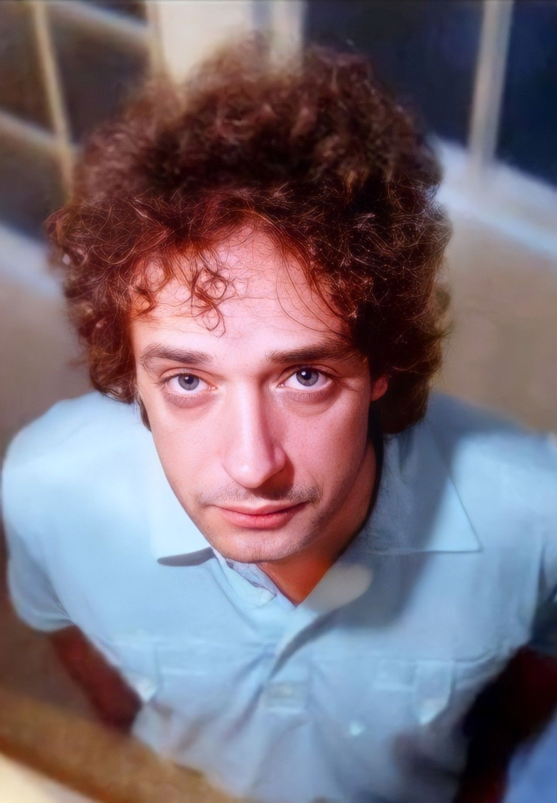

Gustavo Cerati (1959-2014) fue un influyente músico y compositor argentino, conocido principalmente por su trabajo como líder de la banda de rock Soda Stereo y por su exitosa carrera en solitario. Nacido en Buenos Aires, Cerati comenzó su carrera musical en la década de 1980 con Soda Stereo, que se convirtió en una de las bandas de rock en español más importantes de la región. Su música innovadora y su estilo carismático ayudaron a definir el rock en español y a expandir su popularidad a nivel internacional.

Después de la disolución de Soda Stereo en 1997, Cerati lanzó una exitosa carrera como solista. Su trabajo en solitario consolidó su estatus como uno de los grandes artistas del rock latinoamericano, con álbumes aclamados como "Amor Amarillo" y "Fuerza Natural".
Cerati sufrió un accidente cerebrovascular en 2010, lo que dejó su salud deteriorada y lo llevó a un largo período de coma. A pesar de su condición, su legado musical sigue siendo celebrado y su influencia perdura en la música latinoamericana. Cerati falleció en 2014, pero su impacto en el rock y la cultura popular continúa siendo significativo.
Colores santos es un álbum de estudio lanzado en el año 1992 realizado por los músicos argentinos Gustavo Cerati y Daniel Melero. Contó con la colaboración de Flavio Etcheto en trompetas y coros de Carola Bony en «Pudo ser». El álbum nunca fue presentado formalmente en vivo.
Amor amarillo es el primer álbum de estudio solista de la carrera de Gustavo Cerati, publicado el 1 de noviembre de 1993 (en plena etapa de fricción con Soda Stereo). La única presentación oficial del álbum fue un acústico hecho para la radio FM 100 en 1994, ya que Gustavo lo consideraba un disco íntimo.
Bocanada es el segundo álbum de estudio solista del músico argentino Gustavo Cerati, el primero luego de la disolución del grupo musical Soda Stereo.Fue publicado el 28 de junio de 1999 a través del sello discográfico BMG Ariola. Cerati publicó su primer álbum solista Amor amarillo en 1993, en aquel entonces su banda Soda Stereo tenía varios problemas internos que terminaron concluyendo en su disolución y la salida de su último disco Sueño Stereo (1995). Cerati comenzó a trabajar en su segundo disco solista a pesar de que él mismo lo catalogaba como «primer disco solista», lo produjo y se caracteriza por sus influencias a la música electrónica.
11 episodios sinfónicos es un disco en vivo grabado por Gustavo Cerati en el teatro Avenida de Buenos Aires, en agosto de 2001. El concierto consistió en Cerati cantando y Alejandro Terán (quien realizó los arreglos de los temas) en la dirección de la orquesta. En 2003 se lanzó un DVD con cuatro canciones adicionales que no estaban incluidas en el CD e incluye una sección denominada "detrás de las cámaras", un documental y extras. Incluye la mezcla en sonido envolvente 5.1 del concierto.
+Bien es la banda sonora de la película +bien dirigida por Eduardo Capilla y estrenada en 2001. Las 11 canciones fueron compuestas y ejecutadas por Gustavo Cerati, quien también actuó en la película.
Siempre es hoy es el tercer álbum de estudio como solista del músico de Argentina Gustavo Cerati, lanzado el 26 de noviembre de 2002, el mismo que al año siguiente sería nominado a los Premios Grammy en la categoría "mejor álbum latino de rock alternativo".Es un álbum que sigue el estilo de Bocanada (1999), aunque los elementos del pop rock están parcialmente presentes, y se hace más énfasis en la electrónica.
Ahí vamos es el cuarto álbum de estudio como solista del músico artístico de Argentina Gustavo Cerati lanzado el 4 de abril de 2006 por Sony Music. El álbum obtuvo excelentes críticas y popularidad, especialmente en Argentina, Chile, Colombia y México. El disco fue certificado como platino en Argentina solo con las ventas anticipadas, y alcanzó el disco de oro en México. En este álbum, Cerati vuelve al estilo roquero y crudo que lo caracterizaba en álbumes como Canción animal y Dynamo de Soda Stereo.
"Fuerza natural es el quinto y último álbum de estudio de Gustavo Cerati en su etapa como solista, lanzado el 1 de septiembre de 2009. El disco se caracteriza por un sonido folk con presencia de guitarras acústicas y mandolinas. Fue certificado con disco de oro en Argentina por vender más de 20 000 copias en su primera semana de lanzamiento, luego alcanzó el disco de platino.
Soda Stereo es el título del álbum debut de estudio homónimo grabado por la banda de rock en español argentina Soda Stereo. El álbum fue lanzado al mercado bajo el sello discográfico CBS Discos el 27 de agosto de 1984. La producción de este álbum debut estuvo a cargo de Federico Moura, vocalista y líder de Virus.
Nada personal es el nombre del segundo álbum de estudio de la banda de rock latino Soda Stereo, y fue editado en Argentina el 21 de noviembre de 1985. Fue reeditado en CD por primera vez en 1991.